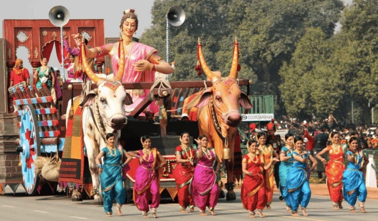

Welcome to Maharashtra!

Maharashtra, located in western India, is a vibrant state known for its rich cultural heritage, dynamic cities,
historical landmarks, and diverse cuisine. From the bustling streets of Mumbai to the ancient caves of Ajanta and
Ellora, Maharashtra offers a blend of tradition, modernity, and natural beauty.
Cultural Diversity: Maharashtra is home to a diverse mix of cultures and traditions. The state celebrates
festivals like Ganesh Chaturthi with great enthusiasm, where colorful processions and elaborate decorations mark
the birth of Lord Ganesha. Other festivals such as Diwali, Holi, Eid, and Gudi Padwa are also celebrated with
fervor, reflecting the cultural mosaic of the state.
Historical Heritage: Maharashtra boasts a rich historical legacy with UNESCO World Heritage Sites like the Ajanta
and Ellora Caves, showcasing ancient Buddhist rock-cut temples and exquisite sculptures. The Elephanta Caves near
Mumbai, dedicated to Lord Shiva, are another architectural marvel. Forts like Raigad, Pratapgad, and Sinhagad
offer insights into the state's military history and strategic importance.
Cuisine: Maharashtrian cuisine is diverse and flavorful, with influences from Marathi, Konkani, and Malvani
culinary traditions. Staple foods include rice, wheat, and millets, served with spicy curries like Vada Pav, Pav
Bhaji, and Misal Pav. Maharashtrian sweets such as Puran Poli, Modak, and Shrikhand are enjoyed during festivals
and special occasions, highlighting the state's culinary richness.
Arts and Literature: Maharashtra has a thriving arts scene, with traditional music forms like Lavani, Powada, and
Bhavageet capturing the essence of Marathi culture. Marathi literature, represented by poets like Sant Tukaram,
Namdev, and Jnaneshwar, reflects spiritual depth and social commentary. The state's theater tradition, with iconic
institutions like the Maharashtra State Drama Academy, nurtures performing arts and cultural expressions.
Modern Maharashtra: Mumbai, the capital city and financial hub of India, embodies modern Maharashtra with its
skyscrapers, Bollywood film industry, and vibrant nightlife. The city's landmarks like the Gateway of India,
Marine Drive, and Siddhivinayak Temple are iconic symbols of Mumbai's cosmopolitan spirit and cultural diversity.
Handicrafts and Textiles: Maharashtra is renowned for its handloom textiles like Paithani sarees, Maheshwari
sarees, and Kolhapuri chappals, which showcase intricate weaving techniques and vibrant designs. Warli painting, a
tribal art form depicting rural life through simple geometric patterns, is another cultural treasure of
Maharashtra's artistic heritage.
Natural Beauty: Maharashtra's natural landscapes range from the lush Western Ghats, dotted with hill stations like
Mahabaleshwar and Matheran, to pristine beaches along the Konkan coast. The state's national parks and wildlife
sanctuaries, such as Tadoba-Andhari Tiger Reserve and Sanjay Gandhi National Park, offer opportunities for
wildlife safaris and eco-tourism experiences.
In summary, Maharashtra's culture is a mosaic of traditions, festivals, cuisine, arts, and natural wonders. Its
blend of historical richness, modern dynamism, and artistic expressions make it a captivating destination for
travelers seeking a diverse and enriching cultural experience in India.